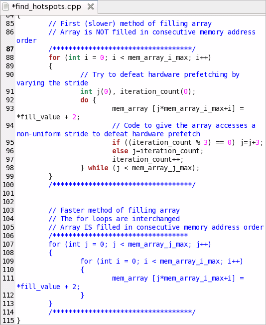

In the
Source window, you identified a code line in the
initialize_2D_buffer
hotspot function that took the most CPU time. Focus on this line and do the
following:
In the
Source window, you identified a code line in the
initialize_2D_buffer
hotspot function that took the most CPU time. Focus on this line and do the
following:
Open the Code Editor
Note
Depending on the sample code version, your source line numbers may slightly differ from the numbers provided in this tutorial.
In
the
Source window, click the
 Source Editor button to open the
find_hotspots.cpp file
in the default code editor at the hotspot line:
Source Editor button to open the
find_hotspots.cpp file
in the default code editor at the hotspot line:

Hotspot line 93 is used to initialize a memory array using non-sequential memory locations. For demonstration purposes, the code lines are commented as a slower method of filling the array.
Resolve the Problem
To resolve this issue, optimize your algorithm as follows:
Edit line 87 deleting the ending forward slash (/). This action comments out code lines 88-99 marked as a "First (slower) method".
Edit line 106 by adding a forward slash (/) at the end of the line. This action uncomments code lines 107-113 marked as a "Faster method".
In this step, you interchange the for loops to initialize the code in sequential memory locations.
Save the changes made in the source file.
Browse to the directory you extracted the sample code (for example, /home/myuser/samples/tachyon).
Rebuild your target using the make command as follows:
$ make clean
$ make
The tachyon_find_hotspots application is rebuilt and stored in the tachyon directory.
Run tachyon_find_hotspots as follows:
$ ./tachyon_find_hotspots dat/balls.dat

System runs the tachyon_find_hotspots application. Note that execution time reduced from 16.604 seconds to 9.487 seconds.
Key Terms
Next Step
Optimization Notice |
|---|
Intel's compilers may or may not optimize to the same degree for non-Intel microprocessors for optimizations that are not unique to Intel microprocessors. These optimizations include SSE2, SSE3, and SSSE3 instruction sets and other optimizations. Intel does not guarantee the availability, functionality, or effectiveness of any optimization on microprocessors not manufactured by Intel. Microprocessor-dependent optimizations in this product are intended for use with Intel microprocessors. Certain optimizations not specific to Intel microarchitecture are reserved for Intel microprocessors. Please refer to the applicable product User and Reference Guides for more information regarding the specific instruction sets covered by this notice. Notice revision #20110804 |